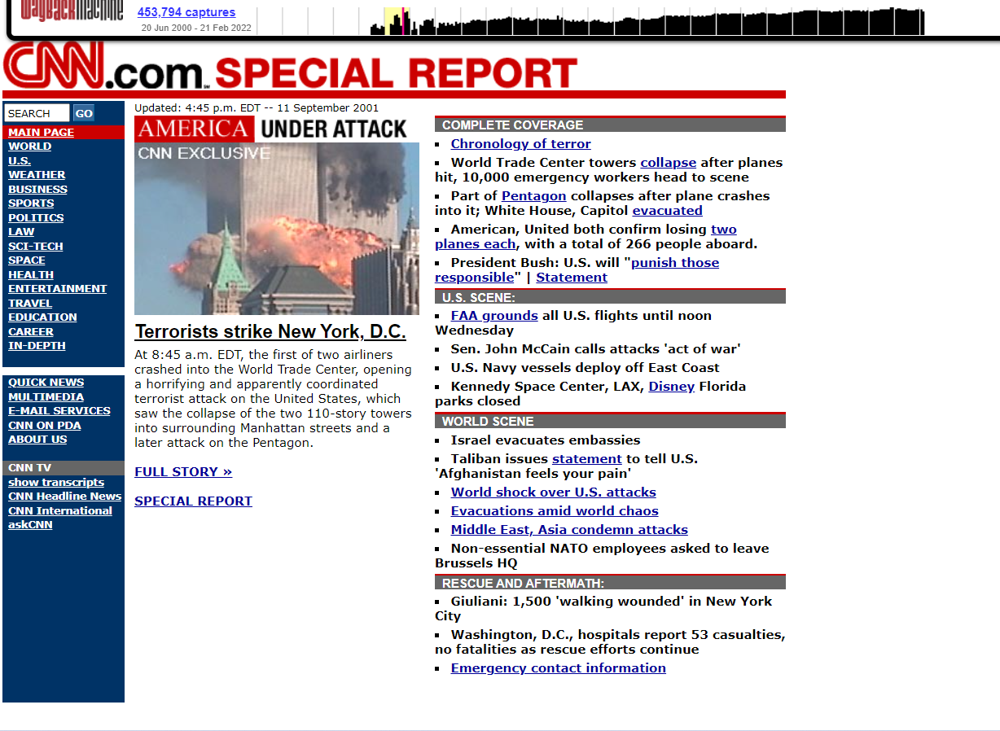
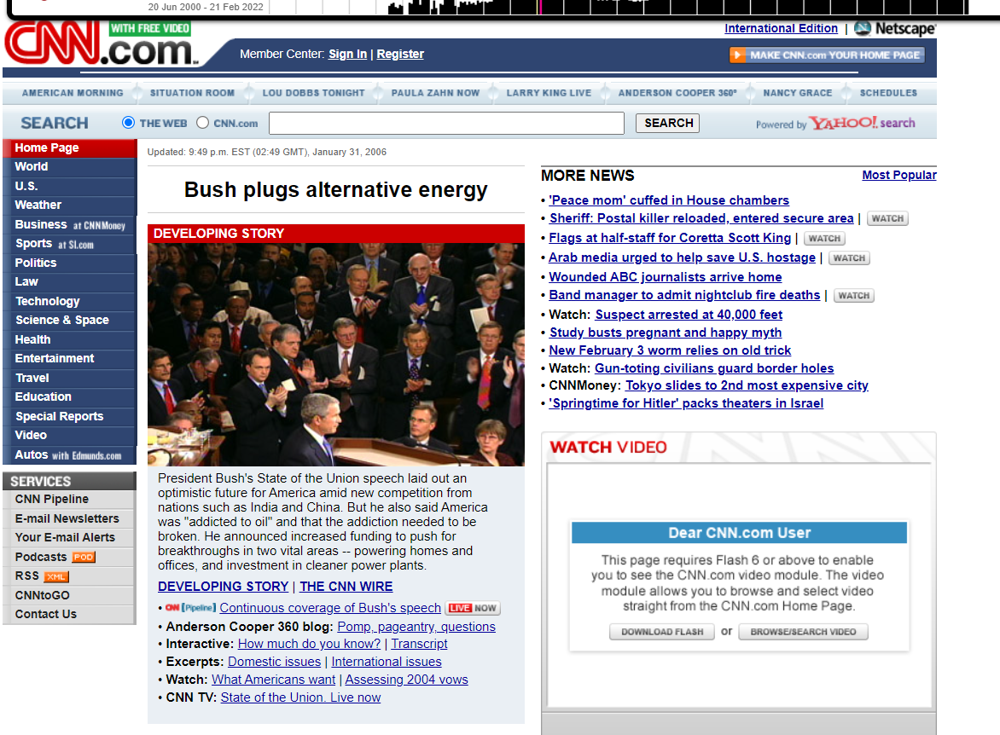
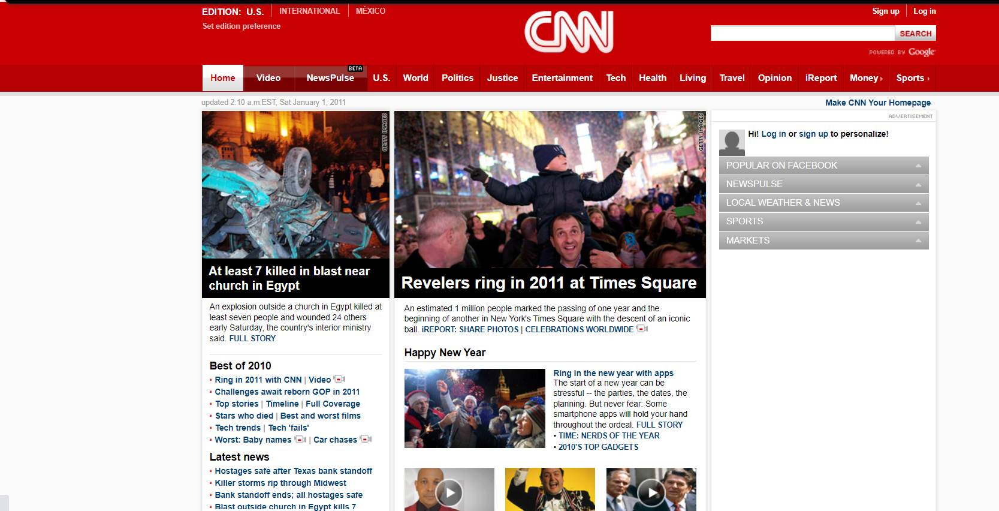
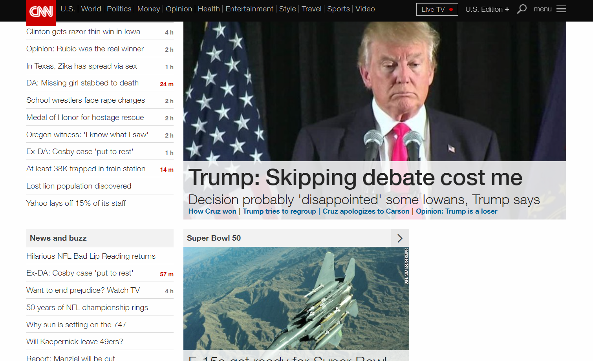
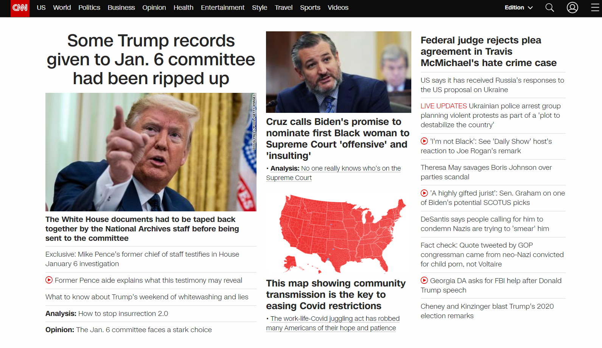

2001
2006
2011
2016
2022
Conteúdo jornalistico. Levar informações de fácil acesso para as pessoas que não estão perto de uma televisão, e de forma rápida.
Sim. Com o tempo ele foi ficando mais simplificado para que as pessoas tivessem uma melhor experiência no site.
No site de 2001, a interface esta poluída, tem muita coisa na tela e as pessoas ficam um pouco perdidas. Na interface de 2022, melhorou a parte intuitiva, mas ainda existe muitas informações juntas na mesma coluna o que pode causar uma confusão ou falta de interesse em continuar no site para algumas pessoas.
Deixaria mais intuitivo, e optaria pelo "menos é mais" para as colunas e no texto deixaria um pouco mais objetivo.